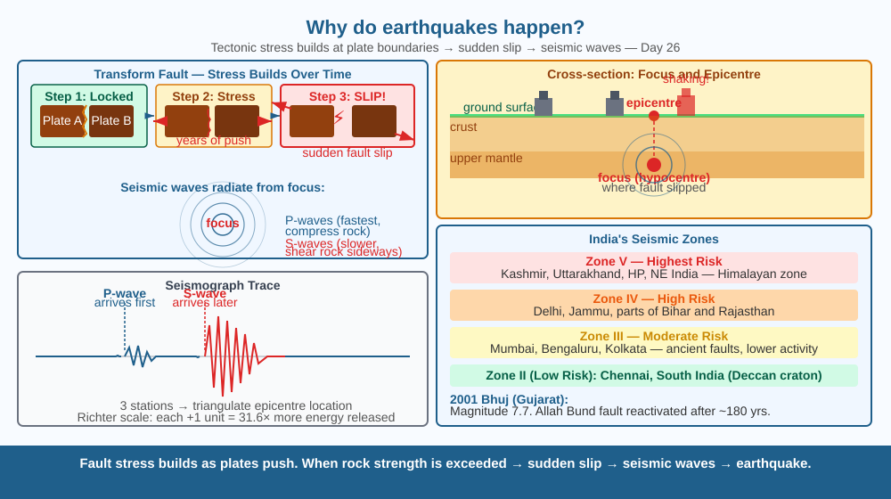

Discover why the ground suddenly shakes — and why it is not random, but the predictable result of giant rocky plates that have been pressing against each other for millions of years.
On 26 January 2001, the city of Bhuj in Gujarat shook violently for two minutes. Buildings collapsed, 20,000 people died, and 400,000 homes were destroyed — in an area that had been calm for over 180 years. Nothing was visibly wrong with the ground beforehand. What stores so much energy, silently, for so long — and why does it release all at once?
The outer layer of the Earth — the crust — is broken into about 15 large pieces called tectonic plates. These plates float on the semi-molten mantle below and move very slowly (1–10 cm per year — about the speed your fingernails grow). At the boundaries where plates meet, three things can happen: - Convergent boundary: Plates push toward each other. One may slide under the other (subduction), forming mountains or ocean trenches. - Divergent boundary: Plates pull apart, allowing magma to fill the gap (mid-ocean ridges). - Transform boundary: Plates slide sideways past each other — this is where most earthquakes originate.
At these boundaries, the rough edges of plates lock together due to friction. As the plates continue to be pushed by convection currents in the mantle, stress (elastic strain energy) builds up in the rock — like bending a twig. When the stress exceeds the rock's strength, the fault (crack in the crust) slips suddenly, releasing all that stored energy as seismic waves — vibrations that travel through the Earth. When these waves reach the surface, we feel them as an earthquake.
The magnitude (Richter or moment magnitude scale) measures the energy released. Each integer increase represents about 31.6× more energy — a magnitude 7 releases 31.6× more energy than a magnitude 6.
Press two rough erasers together, slide them sideways slowly. They stick. You keep pushing. They stick more firmly. Then — suddenly — they jerk. The energy you were adding while pushing got stored in the squeezed rubber, then released instantly when friction gave way. Tectonic plates do exactly this — but over decades, with continent-sized erasers.

The diagram shows two plates meeting at a transform boundary (top view). Over time: arrows show plates pushing in opposite directions; stress lines shown building (step 1 = locked, step 2 = stressed, step 3 = slip). At the slip point, seismic wave rings spread outward like ripples. A cross-section shows the focus (hypocentre, where slip began) and epicentre (point on surface directly above). An inset shows a seismograph trace with P-wave and S-wave arrivals.
Press the palms of both hands together hard. Try to slide one hand downward while the other goes up, but resist with friction. You will feel the two hands stick, then suddenly slip. Notice how the energy "jumps" at the moment of slip. That sudden release of elastic potential energy — across the whole palm surface — is the basic physics of every earthquake. Now imagine two slabs of granite the size of Rajasthan doing that.
Geologists know that the Himalayan collision zone has produced repeated great earthquakes throughout history — roughly every 500–800 years — based on sediment cores and landslide deposits. The last great Himalayan earthquake was in 1934 (Bihar-Nepal, magnitude 8.2). Could another large earthquake be overdue? What information would a seismologist need to assess the risk — and what can and cannot be predicted even with the best data?
What is the main cause of earthquakes?
Why is understanding tectonic plate movement more useful than knowing that earthquakes shake the ground?
If two tectonic plates had been locked together without moving for a very long time, what would you predict when they finally shifted?
The Richter scale is logarithmic: each unit increase equals ~31.6× more energy released. If a magnitude 6.0 earthquake releases 1 unit of "standard" energy, calculate how much more energy a magnitude 8.0 earthquake releases compared to magnitude 6.0 (2 steps). Then compare the 2001 Bhuj earthquake (magnitude 7.7) to the 2004 Sumatra earthquake (magnitude 9.1) — roughly how many times more energy did Sumatra release? Show your working.
The surface of the Earth is actually moving right now — under your feet. The city of Mumbai is moving northeast at about 4 cm per year, carried by the Indian Plate. In 50 million years, India will have embedded itself even deeper into Asia, and the Himalayan mountains may be even taller — or may have collapsed from their own weight. Geological time makes the most dramatic changes on Earth look like they are in slow motion.
Tectonic plates push against each other, building stress at faults for years or decades. When stress exceeds rock strength, the fault slips suddenly → seismic waves → earthquake. The longer the lock, the bigger the eventual slip.